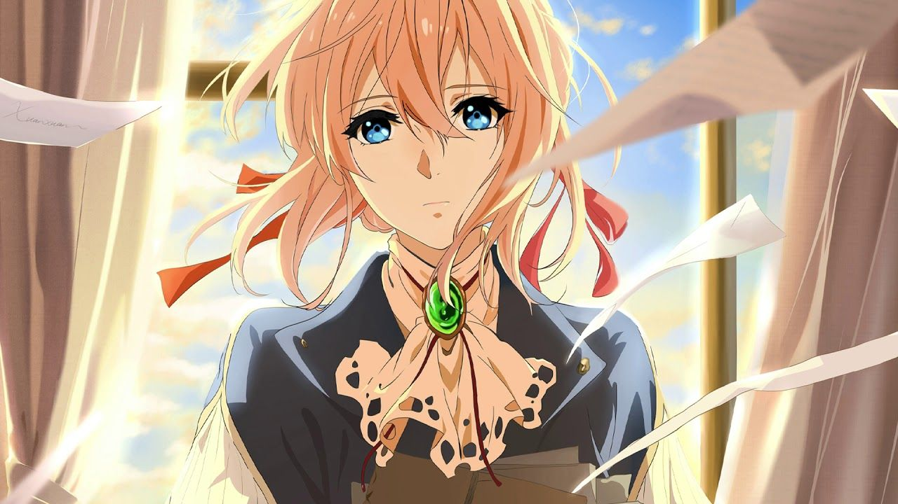

Violet Evergarden: Animação Japonesa Encanta Público e Recebe Reconhecimento Internacional
A aclamada série de anime japonesa "Violet Evergarden" continua a cativar audiências ao redor do mundo com sua narrativa emocionalmente poderosa e animação de alta qualidade. Criada por Kana Akatsuki e ilustrada por Akiko Takase, a série estreou em 2018 e rapidamente conquistou os corações dos fãs, além de receber reconhecimento internacional.
A história gira em torno de Violet Evergarden, uma ex-soldado que, após a guerra, busca encontrar seu lugar no mundo como uma "Boneca de Automemórias", uma escritora profissional que ajuda as pessoas a expressar seus sentimentos em palavras. A série explora temas de amor, perda, crescimento pessoal e a busca pela compreensão das emoções humanas.
A animação de "Violet Evergarden" é elogiada por sua atenção aos detalhes e expressividade, capturando nuances emocionais por meio de seus personagens e cenários meticulosamente projetados. A trilha sonora envolvente também contribui para a atmosfera única da série, intensificando as emoções dos telespectadores.
O sucesso de "Violet Evergarden" ultrapassou as fronteiras do Japão, conquistando uma base global de fãs. A série foi lançada na plataforma de streaming Netflix, tornando-a acessível a uma audiência ainda maior. Sua popularidade resultou em adaptações para filmes e especiais, ampliando ainda mais o alcance de sua história tocante.
Além do reconhecimento dos fãs, "Violet Evergarden" também recebeu elogios da crítica e conquistou prêmios prestigiosos, incluindo o Grand Prize na categoria "Animação do Ano" no Tokyo Anime Awards Festival. A série foi elogiada por sua abordagem sensível de temas emocionais e pela maneira como captura a jornada de autodescoberta da protagonista.
Os fãs aguardam ansiosamente por novos projetos relacionados a "Violet Evergarden", ansiosos por continuar acompanhando a jornada de Violet e os personagens que a cercam. A série deixou uma marca indelével na indústria de anime e permanecerá como um exemplo notável de como a animação japonesa pode explorar profundamente a condição humana.
Em um mundo repleto de entretenimento, "Violet Evergarden" destaca-se como uma obra que toca os corações e evoca reflexões sobre o significado da vida, do amor e da conexão humana. Seu impacto cultural e emocional continua a ressoar, solidificando seu lugar como uma das joias preciosas da animação contemporânea.